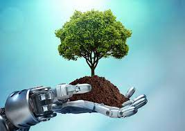

Green Technology
Kylie Forsythe Period 3
What is green technology?
The term "technology" refers to the application of knowledge for practical purposes. The field of "green technology" encompasses a continuously evolving group of methods and materials, from techniques for generating energy to non-toxic cleaning products. The expectation at hand is that this field will bring innovation and changes in daily life of similar magnitude to the "information technology" explosion over the last two decades. In these early stages, it is impossible to predict what "green technology" may eventually exceed.

Green Energy Production
The main function of green energy is to produce electricity and fuel through the use of renewable, naturally occurring energy sources. New green tech is being invented and refined on a consistent basis to make better use of recurring resources and harness their power in hopes of replacing fossil fuels and destructive production manners entirely.
Some Current Methods
Solar - Solar panels, combined into a tower, placed in a field or affixed to a roof, are used to convert sunlight into electrical energy through photovoltaic components or mirrors that concentrate solar radiation
Biogas - Produced during the breakdown of organic matter when oxygen is absent, biogas is primarily composed of methane and carbon dioxide. Biogas can be compressed once carbon dioxide is removed and used to power motor vehicles. Technology is developing to further harness these gasses to reduce fossil fuel use on a larger scale.
Nuclear Power - Nuclear power is a zero-emission clean energy source that produces power through fission, splitting uranium atoms for energy. Heat released by fission creates steam that spins a turbine and generates electricity. Nuclear energy production successfully eliminates the harmful byproducts emitted by fossil fuels, possesses a minimal footpring and produces little waste.
Green tech, making the world a better place